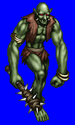
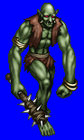
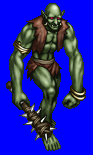
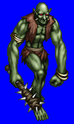

Height: Human height or taller Weight: Human weight or heavier
Habitat: Cave Origin: Europe
Meaning: ???
In Scandinavian myth, trolls are ugly, malicious creatures and the enemies of mankind. They are much bigger and stronger than humans, and leave their caves only after dark to hunt. If they are exposed to sunlight they will instantly turn to stone. Trolls are very fond of human flesh. In later myths they are roughly the size of humans or elves, and thought to be the owners of buried treasures. They are sometimes, although very rarely, portrayed as friendly, less ugly creatures.
See also: Fenrir